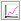
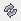

Afin de mieux étudier le modèle et les résultats, il est possible de tracer des courbes. Pour cela, il suffit de faire un clic gauche sur l'icône correspondante de la barre des tâches verticale puis de tracer un cadre. Ce cadre sera l'espace alloué à l'affichage de la ou les courbes. Au départ ce n'est qu'un cadre blanc avec deux axes non gradués.
Icône :
Il faut maintenant définir les courbes à tracer. Pour cela, il suffit de faire un clic droit sur le cadre et faire ainsi apparaître la fenêtre d'édition des courbes.
La fenêtre d'édition des courbes est la même pour tous les modules de GRIF.
Cette fenêtre est divisée en plusieurs parties:
Titre du graphique: permet de donner un titre au graphique.
Liste de données: Cette partie comporte un tableau de plusieurs colonnes dans lequel sont listées les différentes courbes du graphique (nom, description, affichage, couleur de courbe, style de courbe, épaisseur de courbe, affichage le la moyenne). Au-dessus de ce tableau, plusieurs boutons sont disponibles.
: Permet de sélectionner un résultat de calculs à afficher. Il renvoie l'utilisateur vers la fenêtre Sélection de résultats afin d'ajouter un tracé de courbe au graphique (cf. « Courbes depuis les données de la banque de résultats »).
 :
Permet de comparer plusieurs résultats de calculs différents pour une même donnée.
Il renvoie l'utilisateur vers la fenêtre Comparaison de résultats afin
d'ajouter un tracé de courbe au graphique (cf. « Courbes comparatives depuis les données de la banque de résultats »).
:
Permet de comparer plusieurs résultats de calculs différents pour une même donnée.
Il renvoie l'utilisateur vers la fenêtre Comparaison de résultats afin
d'ajouter un tracé de courbe au graphique (cf. « Courbes comparatives depuis les données de la banque de résultats »).
: modifie le tracé de courbe sélectionné.
: supprime le tracé de courbe sélectionné du graphique.
 : fait remonter le tracé de courbe sélectionné dans la liste.
: fait remonter le tracé de courbe sélectionné dans la liste.
: fait descendre le tracé de courbe sélectionné dans la liste.
: enregistre sous format CSV la liste des points calculés pour le tracé des courbes sélectionnés. Cet export ne contient pas les grandeurs génériques, pour avoir un export avec les grandeurs génériques il faut faire un clic droit sur la courbe et faire .
: crée une nouvelle courbe exactement identique au tracé de courbe sélectionnée.
: Permet de figer l'affichage de cette courbe. Cette dernière ne se mettra plus automatiquement à jour en fonction des résultats de calculs.
Pour chaque courbe il est possible de spécifier sa couleur, son style de points, son épaisseur et son affichage.
Options de calcul: permet de paramétrer le calcul (optionnel suivant les modules).
Style: Cette partie concerne l'affichage des courbes.
Type de style: spécification du type de toutes les courbes du graphique (ligne, histogramme, ...). Attention, dans le cas du style histogramme, les barres sortant de la zone d'affichage seront affichées en dégradé pour prévenir l'utilisateur qu'il doit changer les intervalles d'affichages pour voir la barre entièrement.
Intervalles permet de définir les bornes d'affichage de la courbe. Automatiques sans pic : le graphique ne fera pas apparaitre les "pics", cas particuliers de valeurs hors normes, qui rendrait illisible le graphique. Sans afficher ces pics graphiquement, il est donné la possibilité de faire paraitre leurs valeurs en utilisant les choix proposés par l'option Afficher les valeurs des pics.
Intervalles sur X et Y: spécification de l'intervalle d'affichage des axes X et Y (intervalles par défaut ou définis par l'utilisateur). Cette dernière fonction peut permettre par exemple de "zoomer" sur les parties les plus intéressantes du graphique.
L'unité des axes peut être choisie en fonction du type de résultat de calculs. Par exemple pour des unités de temps, l'unité pourra être choisie parmi heures, jours, mois et années.
Le bouton
 permet d'afficher ou non l'unité sur le graphique.
permet d'afficher ou non l'unité sur le graphique.
Les cases log permettent d'activer l'échelle logarithmique sur l'axe concerné. Attention, le 0 n'est pas représentable en échelle log, pensez à indiquer un début strictement positif (E-10 par exemple). Si 0 est indiqué, l'échelle log commencera à une valeur arbitraire E-15. Lorsque le moteur de calcul le permet, il est possible d'afficher l'intervalle de confiance, en cochant la case correspondante.
Zones: Permet de distinguer sur un fond de couleur les plages de valeurs (zones).
En style histogramme, une case à cocher permet de faire un histogramme cumulé.
Option d'affichage: permet d'activer ou non la fonction Afficher le titre (affichage du titre du graphique) et la fonction Afficher les grandeurs génériques (affichage du min, du max et de la moyenne de chaque courbe).
Lorsqu'une courbe est éditée, la fenêtre d'édition d'une courbe contient souvent 3 parties : les temps auxquels le calcul est réalisé, ce qui est calculé, les informations supplémentaires (grandeurs génériques) qui doivent être affichées ou non sous la courbe.
Remarque : il est parfois nécessaire de rafraîchir tous les graphiques d'un document. Pour cela il faut utiliser la commande Outils / Rafraîchir ou utiliser le raccourci clavier F5 ou l'icône .
Lorsque l'utilisateur clique sur le bouton de la partie Liste de données, une fenêtre permet de spécifier la courbe à tracer. Toutes les courbes représentent des informations stockées dans la base. La fenêtre suivante permet d'indiquer la manière de récupérer ces informations.

Légende: légende de la courbe.
Sélection du calcul: permet de choisir dans la banque de résultats le calcul à utiliser.
Résultat à afficher: un calcul contient souvent plusieurs résultats, cette arborescence permet de spécifier le résultat que l'on souhaite dans le calcul.
Vous avez la possibilité d'afficher la liste des points en spécifiant les données voulues sur chacun des axes ; ou vous avez la possibilité d'afficher les temps passés dans les zones.
Axes: Permet d'indiquer ce qui doit être mis en abscisse et en ordonnée.
Grandeurs à afficher: Enfin il en possible d'afficher certaines informations supplémentaires (min, max, moyenne ....)
Lorsque l'utilisateur clique sur le bouton de la partie Liste de données, une fenêtre permet de spécifier la courbe à tracer. On peut alors choisir d'afficher un résultat issu de plusieurs calculs différents. La fenêtre suivante permet d'indiquer la manière de récupérer ces informations.

Légende: légende de la courbe.
Calculs à utiliser: permet de choisir dans la banque de résultats les différents calculs à utiliser. Maintenez la touche Ctrl appuyez pour effectuer une sélection multiple des calculs.
Résultat à afficher: un calcul contient souvent plusieurs résultats, cette arborescence permet de spécifier le résultat que l'on souhaite afficher.
Information à afficher: Indique quelle donnée doit être affichée en ordonnée.
Pour quel point ?: Indique quel point du calcul doit être comparé aux autres.
Afficher les abscisses suivant la valeur: Indique quelle donnée doit être affichée en abscisse.
Grandeurs à afficher: Enfin il en possible d'afficher certaines informations supplémentaires (min, max, moyenne ....)